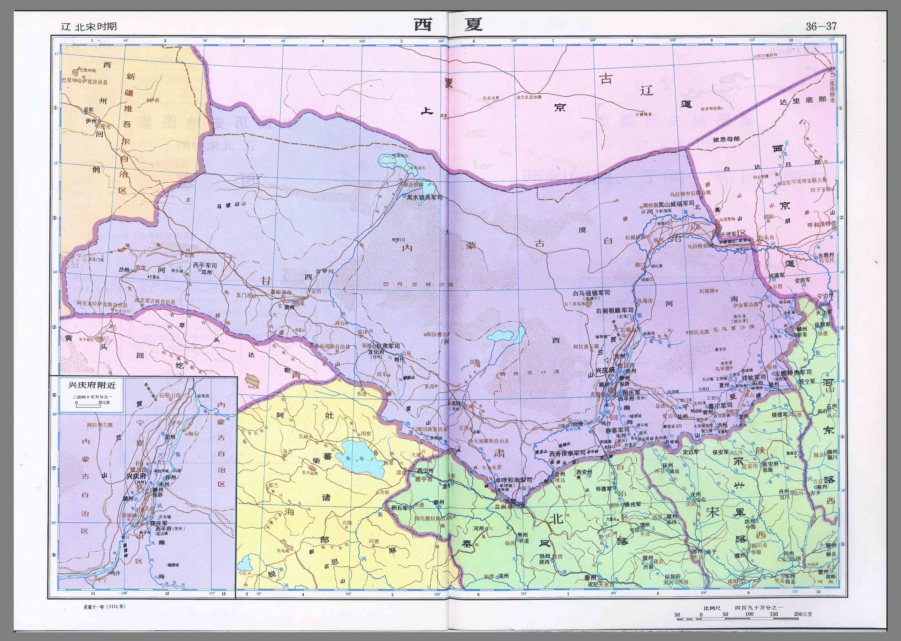

政权综述 · 中文 / English 独立切换 中文 English
西夏政权史（党项）
说明 ：本文件为现代转述的政权概述，非史料原文。疆域描述为文字示意，不声称精确。人物生卒年凡不确定者标"约/存疑"。西夏汉文史料多散佚，多赖宋辽金元人记述，版本问题特须注明。（页码待核，未能联网核验。）
党项建国（约982—1038）
党项拓跋部唐末据夏州，李继迁（约963—1004，存疑）叛宋自立，其子李德明（约981—1032，存疑）向宋辽称臣纳贡，李元昊（1003—1048）1038年称帝建国号大夏，定都兴庆府。西夏仿宋立官制、创西夏文字，军政重镇为兴庆、凉州与黑水城。
宋夏和战（1040—1227）
元昊三川口、好水川连败宋军，1044年宋夏庆历和约：夏向宋称臣，宋岁赐银绢茶叶。仁宗、神宗屡兴边事，五路伐夏与永乐城之战互有胜负。金起后夏附金，绍兴和议后夏金宋三足鼎立。后期蒙古崛起，1227年成吉思汗灭夏，末主李睍被俘，史料毁坏极多，细节多存疑。
帝系传承（传世谱系，存疑处见 emperors.yaml）
景宗李元昊、毅宗李谅祚（约1047—1068，存疑）、惠宗李秉常、崇宗李乾顺、仁宗李仁孝、桓宗李纯祐、襄宗李安全、神宗李遵顼、献宗李德旺、末主李睍。没藏太后、梁太后垂帘与权相事见 power-holders.yaml。
graph TD
A[李继迁 奠基约982-1004] --> B[李德明 约1004-1032]
B --> C[李元昊 景宗1038-1048 称帝]
C --> D[李谅祚 毅宗1048-1068]
D --> E[李秉常 惠宗1068-1086]
E --> F[李乾顺 崇宗1086-1139]
F --> G[李仁孝 仁宗1139-1193]
G --> H[李纯祐 桓宗1193-1206]
H --> I[李安全 襄宗1206-1211]
I --> J[李遵顼 神宗1211-1223]
J --> K[李德旺 献宗1223-1226]
K --> L[李睍 末主1226-1227 蒙古灭夏]
疆域文字示意（非精确地图）
东据黄河河套、西至玉门以东与吐蕃诸部为邻、北至大漠戈壁、南抵秦凤横山一线与宋为界。核心为今宁夏、陕北、陇东与河西走廊东段。以上仅为文字示意，不作比例与现代边界依据。详见 maps/meta.yaml。
Western Xia Overview (982–1227)
The Western Xia (982–1227) was a Tangut state styled Great Xia. The Tangut Tuoba clan held Xiazhou from late Tang; Li Jiqian 李继迁 (circa 963–1004, disputed) broke with Song, his son Li Deming 李德明 (circa 981–1032, disputed) balanced between Song and Liao, and Li Yuanhao 李元昊 (1003–1048) proclaimed himself emperor in 1038 with Xingqing as capital. The regime modeled offices on Song practice, created the Tangut script, and anchored defense at Xingqing, Liangzhou, and Heishui city.
After victories at Sanchuan and Haoshuichuan, the Qingli peace of 1044 made Xia nominally subordinate to Song in exchange for annual gifts of silver, silk, and tea. Later Song offensives, the five-route campaign, and the Yongle city battle brought mixed results; Xia later leaned toward Jin, forming a three-way balance with Jin and Song after the Shaoxing settlement. Mongol pressure mounted until Genghis Khan destroyed Xia in 1227; the last ruler Li Xian 李睍 was captured and records were badly damaged, so many details remain disputed.
The transmitted succession runs from Jingzong through Yizong, Huizong, Chongzong, Renzong Li Renxiao 李仁孝, Huanzong, Xiangzong, Shenzong, Xianzong, to the last ruler. Territory is schematic only.
Sources pending page verification, no internet verification.
皇帝传承思维导图 时间顺序：从左到右为即位先后，箭头即传承方向。
flowchart LR
E0["夏景宗李元昊 ’1038-1048’"]
E1["夏毅宗李谅祚 ’1048-1068’"]
E0 --> E1
E2["夏惠宗李秉常 ’1068-1086’"]
E1 --> E2
E3["夏崇宗李乾顺 ’1086-1139’"]
E2 --> E3
E4["夏仁宗李仁孝 ’1139-1193’"]
E3 --> E4
E5["夏桓宗李纯祐 ’1193-1206’"]
E4 --> E5
E6["夏襄宗李安全 ’1206-1211’"]
E5 --> E6
E7["夏神宗李遵顼 ’1211-1223’"]
E6 --> E7
E8["夏献宗李德旺 ’1223-1226’"]
E7 --> E8
E9["夏末主李睍 ’1226-1227’"]
E8 --> E9
帝系表明细(emperors.yaml) # 西夏皇帝简表（传世谱系；生卒年多据通行辞书，未能联网核验，一律视为约数/存疑）
# period_id: western-xia
- {name: 夏景宗李元昊, reign: '1038-1048', birth_death: 1003—1048, note: 称帝建大夏，创西夏文}
- {name: 夏毅宗李谅祚, reign: '1048-1068', birth_death: 约1047—1068存疑, note: 幼主，梁太后专权前期}
- {name: 夏惠宗李秉常, reign: '1068-1086', birth_death: 约1061—1086存疑, note: 梁太后专权，宋五路伐夏时在位}
- {name: 夏崇宗李乾顺, reign: '1086-1139', birth_death: 约1084—1139存疑, note: 改姓称藩于金之说存疑待考}
- {name: 夏仁宗李仁孝, reign: '1139-1193', birth_death: 约1124—1193存疑, note: 重文尚法，设蕃汉学院}
- {name: 夏桓宗李纯祐, reign: '1193-1206', birth_death: 约1177—1206存疑, note: 蒙古初侵时在位}
- {name: 夏襄宗李安全, reign: '1206-1211', birth_death: 约1170—1211存疑, note: 被废，年代异说存疑}
- {name: 夏神宗李遵顼, reign: '1211-1223', birth_death: 约1163—1223存疑, note: 蒙古连年入侵}
- {name: 夏献宗李德旺, reign: '1223-1226', birth_death: 约1181—1226存疑, note: 抗蒙求和反复}
- {name: 夏末主李睍, reign: '1226-1227', birth_death: 约？—1227存疑, note: 蒙古灭夏，被俘结局存疑}
实际掌权人思维导图 mindmap
root((西夏·名义君主与实际掌权者))
李谅祚（毅宗）
没藏太后与没藏讹庞
垂帘与国相专权
李秉常（惠宗）
梁太后与梁乙埋
垂帘与国相专权
李乾顺（崇宗）
晋王察哥
统军经略横山
掌权表明细(power-holders.yaml) # 西夏权臣与摄政简表（年份为传世纪年，未能联网核验）
# period_id: western-xia
- {nominal_lord: 李谅祚（毅宗）, holder: 没藏太后与没藏讹庞, role: 垂帘与国相专权, start_year: 1048, end_year: 1056, basis: 传世谱系称没藏氏专政, event: 没藏氏之乱, source: 《宋史》传世本卷四百八十五·夏国传（具体版本待考，页码待核）, dispute: 谅祚卒因与年龄记载矛盾存疑}
- {nominal_lord: 李秉常（惠宗）, holder: 梁太后与梁乙埋, role: 垂帘与国相专权, start_year: 1068, end_year: 1094, basis: 传世谱系称梁氏秉政屡犯宋, event: 永乐城之战, source: 《宋史》传世本卷四百八十五·夏国传（具体版本待考，页码待核）, dispute: 永乐城宋军覆没数字悬殊存疑}
- {nominal_lord: 李乾顺（崇宗）, holder: 晋王察哥, role: 统军经略横山, start_year: 1098, end_year: 1103, basis: 传世谱系称平夏城好水川用兵, event: 宋夏横山拉锯, source: 《宋史》传世本夏国传及种师道相关记述（具体版本待考，页码待核）, dispute: 战役归属与地名考订争议}
独立时间线思维导图(本朝代隔离展示) 时间顺序：分期从上到下、期内从左到右为先后。
flowchart TD
subgraph P0["大事编年"]
direction LR
P0N0["李元昊称帝建大夏定都兴庆 显道五年（1038）"]
P0N1["宋夏庆历和约，夏向宋称臣 庆历四年（1044）"]
P0N0 --> P0N1
P0N2["永乐城之战宋五路伐夏大败 元丰五年（1082）"]
P0N1 --> P0N2
P0N3["平夏城之战后横山拉锯，夏 元符二年（1099）"]
P0N2 --> P0N3
P0N4["女真建金，西夏转而通金（ 天庆五年（1115）"]
P0N3 --> P0N4
P0N5["蒙古灭西夏，末主李睍被俘 嘉定二十年（1227）"]
P0N4 --> P0N5
end
时间线明细(timeline.yaml) # 西夏大事年表（传世纪年，未能联网核验）
- {year_label: 显道五年（1038）, year: 1038, period_id: western-xia, title: 李元昊称帝建大夏定都兴庆府, confidence: high, source: 《宋史·夏国传》传世本（版本待考，页码待核）}
- {year_label: 庆历四年（1044）, year: 1044, period_id: western-xia, title: 宋夏庆历和约，夏向宋称臣纳岁赐, confidence: medium, source: 《宋史·夏国传》传世本（版本待考，页码待核）}
- {year_label: 元丰五年（1082）, year: 1082, period_id: western-xia, title: 永乐城之战宋五路伐夏大败, confidence: medium, source: 《宋史·夏国传》传世本（版本待考，页码待核）}
- {year_label: 元符二年（1099）, year: 1099, period_id: western-xia, title: 平夏城之战后横山拉锯，夏请和, confidence: low, source: 《宋史·夏国传》传世本（版本待考，页码待核）}
- {year_label: 天庆五年（1115）, year: 1115, period_id: western-xia, title: 女真建金，西夏转而通金（具体年代异说存疑）, confidence: disputed, source: 《金史·夏国相关记述》传世本（版本待考，页码待核）}
- {year_label: 嘉定二十年（1227）, year: 1227, period_id: western-xia, title: 蒙古灭西夏，末主李睍被俘, confidence: medium, source: 《元史·太祖本纪》传世本（版本待考，页码待核）}
疆域图(真实地图图片) liaobeisong-quantu.jpg 
xixia.jpg 地图图片来源：gitcode.com/open-source-toolkit/2fba6 （用户提供下载地址；原包未声明制图者/原书/许可，仅本地展示，勿再分发）
疆域图来源与许可(meta.yaml) # 西夏 maps 元数据（自绘文字示意，非精确地图）
maps:
- {file: western-xia-territory.svg, coverage: 西夏极盛时期, claim: 文字示意，非精确疆界，不作比例与海岸线依据, drawn: 自绘示意, license: CC0, dispute: 宋夏金边界犬牙交错，此图不裁决争议, modern_boundary: 禁套现代国界省界}
- {file: territory.svg, coverage: 西夏极盛时期单组, claim: 自绘疆域示意，非精确疆界，不作比例与海岸线依据, drawn: 自绘示意, license: CC0, dispute: 边界犬牙交错与极盛范围历来争议，此图不裁决争议, modern_boundary: 禁套现代国界省界}
real_maps:
- file: maps/liaobeisong-quantu.jpg
origin: https://gitcode.com/open-source-toolkit/2fba6（用户提供下载地址，包内为zip全图/分省图扫描页）
license: 原包未声明（制图者/原书/许可待考；仅本地展示，勿再分发）
- file: maps/xixia.jpg
origin: https://gitcode.com/open-source-toolkit/2fba6（用户提供下载地址，包内为zip全图/分省图扫描页）
license: 原包未声明（制图者/原书/许可待考；仅本地展示，勿再分发）
note_real: 本组疆域图已替换为真实地图图片（jpg），页面优先展示real_maps；territory.svg仅保留兼容/五代等缺包组使用
map_source_url: https://gitcode.com/open-source-toolkit/2fba6（用户提供下载地址；原包未声明制图者/原书/许可，仅本地展示勿再分发）
史料条目(官 3 / 民 1) 全局时间线(分组聚合) · 首页 · 搜索
历史全集静态站 · 零依赖构建 · 史料均注来源版本定位，未核验处标“页码待核/未能联网核验”；演绎与史料严格区分；疆域图为自绘示意非精确测绘，禁套现代边界；官方图待用户提供后替换。